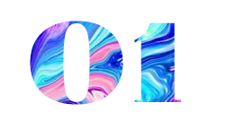
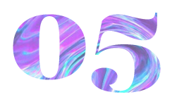

| 01 | A tool for fun or writer's block: press keys to create something completely unique. Inspired by Google Docs and Patatap. |
| 02 | An interactive prototype idea for a new app that allows college students in the NYC area to connect, meet up, or go out. |
| 03 | A collection of inspiring quotes featuring a splash page. Fully responsive. |
| 04 | Prompt: Redesign a Wikipedia page using CSS and Jquery. Original page here. |
| 05 | A collection of all the things I am currently loving, primarily music and art. |
| 06 | An interactive travel index of places I've been to in the past couple years. |
| 07 | PROMPT |
| 08 | Web developer on Mission Magazine's first issue, completely digital and mobile optimized. |